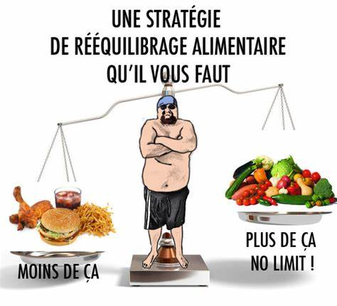

Pour entretenir sa forme, il faut une alimentation équilibrée.
Quels sont les repas pour vaincre la fatigue et retrouver le sommeil ?
Comment chasser le stress et la déprime avec des menus adaptés ?
Le secret de la jeunesse et de la beauté est-il dans l'assiette ?
Toutes les réponses pour être bien dans son corps.
bien-être
chassez les trouble de sommeil, les stress et perte de mémoire grâce à nos conseils!

équilibré les aliments

Que l'on fasse simplement attention à sa ligne, à son alimentation ou que l'on souhaite perdre quelques kilos superflus, un effort diététique s'impose. Découvrez notre sélection des plus savoureuses recettes minceur.
nos conseils
à quoi ça sert la nutrition?
La nutrition est la discipline qui étudie les aliments et leur utilisation par l'organisme.
C'est un élément clé de la santé. Le point sur une science à l'importance croissante.
Le fer est l'un des minéraux essentiels au bon fonctionnement de l'organisme. Il a notamment un rôle fondamental dans la constitution de l'hémoglobine contenue dans les globules rouges. Sachez éviter les carences.
Certains des aliments que vous ingérez au quotidien pourraient vous apporter bien plus si vous changiez votre manière de les consommer. Quelques conseils pour optimiser vos apports nutritionnels.
Un bon repas doit être à la fois varié et équilibré ! Pour ne pas faire d'erreur, Doctissimo vous propose de calculer les calories, glucides, lipides, protéines et alcool que vous consommez lors d'un repas ou sur toute une journée.
Avec l'arrivée des beaux jours, il faut boire ! Car en dévoilant sa peau au soleil, on s'expose inévitablement à la déshydratation. Or pas question de s'abîmer l'épiderme et entamer son capital soleil. Votre bouteille d'eau doit être l'allié indispensable de votre crème solaire ! Doctissimo vous aide à remplir votre verre pour anticiper les fortes chaleurs !